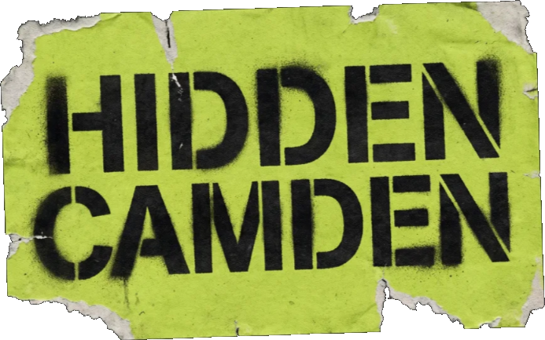

Walk to the venue
Follow the route from Camden Town tube. Each stop stays locked until you are physically standing in front of it. Forty metres, eight seconds, and it opens.

Get the appWalking tour · Camden · NW1
A geofenced audio tour of Camden's music venues. Walk the route, stories unlock the moment your feet arrive, and a real drink banks to your phone for later. No QR codes. No tickets to fumble. Just walk.
£4.99. Stops one and two are on the house.
How it works
Follow the route from Camden Town tube. Each stop stays locked until you are physically standing in front of it. Forty metres, eight seconds, and it opens.
Your phone buzzes and a two-minute story plays. The witch, the boxer, the lie about jazz. The history that never got a blue plaque, told straight.
A real drink lands in your pocket, redeemable inside the venue when you want it. The rewards bank, so you do not have to drink your way round in an hour.
Two ways to walk it
Ten stops through the rooms that built British music. World's End to Dingwalls, the Ballroom to the Barfly. A pint banked at every stop, told by a real Camden voice.
Ten daylight stops with no round required. Record shops, boots, murals and the warehouse where they built the Muppets. Rewards without the booze, so bring the kids.
Your guide
The house voice walks you round today. A bill of Camden legends is joining, each telling the streets their own way.
Dry, North London. Knows every back door and who got thrown out of it.
Spins the Dublin Castle and the Good Mixer. The booth gossip and the after-hours.
Loud, restless, Underworld approved. The new noise and where it hides.
The Libertines. Lock-ins, guerrilla gigs and the Dublin Castle stage by heart.
Madness frontman, Camden royalty. The streets that built the band, from the man who walked them first.
North London to the world. A newer Camden, told by one of its sharpest.
In partnership with
Sponsors fund every reward on the tour, so the walk stays cheap and the venues pay nothing for stock.
 Dr. Martens
Dr. Martens
Headline partner. Camden's boot of choice since the skinheads, the two-tone kids and the punks laced up on Kentish Town Road.
Drinks poured by
 Guinness
Guinness
 Tanqueray
Tanqueray
 Diageo
Diageo
Giving back
Camden made the music. The next generation should get the same shot. A portion of every ticket supports the Roundhouse's work getting young people from the borough into music, radio and the arts, in the room that started it all up the road.
About the Roundhouse Roundhouse
Roundhouse
For venues & brands
The tour is editorial. No venue can buy its way onto the route. Everything below sits around the walk, clearly marked, and never inside the story.
List your gigs. We put them in front of people already standing in NW1 with headphones in and a night ahead of them. Promoted slots and ticket links available.
Every Camden venue gets a free pin on the map. Verified Partners unlock a full profile, a live gig feed, a walk-in offer and a booking link.
Fund a reward, not an ad. Your brand pours the drink at the end of a story people will actually remember, billed only on drinks redeemed.
No cold route-buying. We only work with rooms and brands that fit the walk.
Coming to iPhone and Android. Be first through the door.